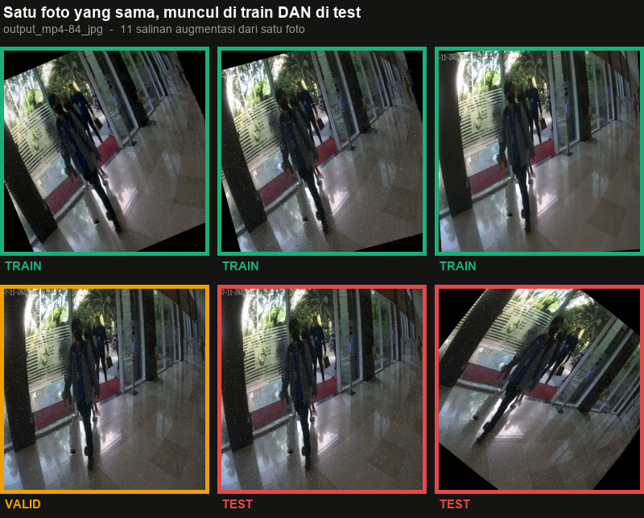
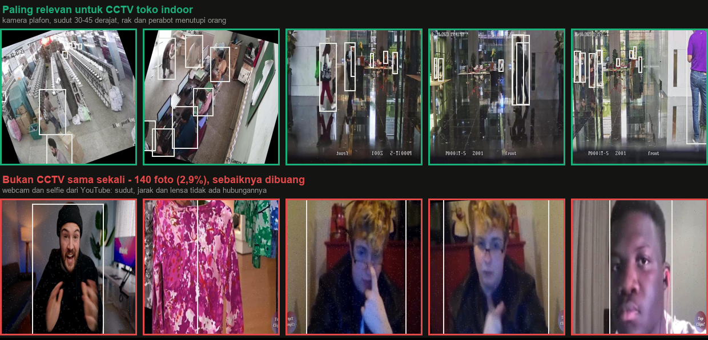

Export Roboflow ini dibongkar, diukur per piksel, dan ditulis ulang. Tiga cacat ditemukan di export aslinya — satu di antaranya membuat skor test-nya tidak berarti.
Datasetnya layak dipakai — setelah dibersihkan.
Export aslinya mengklaim 10.062 gambar. Yang benar-benar foto berbeda hanya 4.886; sisanya salinan augmentasi, dan salinan itu tersebar ke split yang berbeda sehingga 75% file test sudah pernah dilihat saat training. Versi bersihnya ada di data/cctv-person/: satu kelas person, split 80/10/10 dipisah per-scene, format COCO dan YOLO.
Keempatnya tidak terlihat dari struktur folder maupun README — baru muncul setelah anotasi dan pikselnya diperiksa.
Ada enam kelas terdaftar: person, 0, CCTV persons - v1 2024-09-16 8:18pm, Person, no_safetyshoes, safety_shoes. Kelas person — satu-satunya yang namanya masuk akal — justru kosong; 99,5% anotasi memakai category_id: 2, yang namanya string timestamp. Kode yang mencari name == "person" mendapat dataset kosong tanpa error apa pun.
10.062 file hanya berisi 4.886 foto yang benar-benar berbeda. Augmentasi — rotasi dengan sudut hitam, noise bintik, pergeseran eksposur — sudah menyatu di pikselnya, padahal README.roboflow.txt menyatakan tidak ada augmentasi yang diterapkan. Kalimat itu menjelaskan langkah export fork-nya, bukan gambar sumbernya.
1.651 foto punya salinan di lebih dari satu split. Foto yang sama, cuma diputar dan dikasih noise, duduk di train dan di test sekaligus. Terparah di test: 75% filenya sudah pernah muncul di split lain.
Sudah diperbaiki — split dipisah per-sceneKelas no_safetyshoes dan safety_shoes menyumbang 60 kotak — rasio tinggi/lebar 1,0–1,4 dan luas 0,3% frame, jelas sepatu, bukan orang (kotak orang di dataset ini rasionya 2,1). Semuanya hanya ada di split valid, jadi pemeriksaan yang cuma melihat split train akan melewatkannya sepenuhnya. Kalau semua kelas digabung jadi person tanpa filter, model belajar bahwa sepatu adalah orang.
Duplikat dicari dari kemiripan piksel, bukan nama file — karena 1.507 nama file ternyata menampung lebih dari satu foto berbeda, jadi pengelompokan berdasarkan nama justru membuang gambar asli.

Split bawaan export. Test paling parah karena ukurannya paling kecil, jadi peluang salinannya nyasar ke train paling besar.
2.922 dari 4.886 foto punya lebih dari satu salinan di export; ada yang sampai 10 atau lebih.
Konsekuensinya praktis: berapa pun mAP yang keluar dari split test bawaan, angkanya tidak bisa dipercaya. Kalau Anda sudah pernah training dengan export aslinya, ukur ulang di data/cctv-person/annotations/test.json.
Dataset ini campuran: rekaman CCTV asli dari 1.598 lokasi berbeda — indoor dan outdoor — ditambah sedikit gambar yang bukan CCTV sama sekali. Untuk kamera plafon di toko, bagian indoor-nya yang paling bernilai.

Dikelompokkan dari pola nama file sumbernya, lalu tiap kelompok diperiksa visual. 28% belum bisa diidentifikasi dari namanya — isinya campuran indoor dan outdoor.
Yang tidak dimiliki dataset ini: sudut top-down curam — kamera plafon yang menghadap hampir lurus ke bawah — dan lensa fisheye kuat. Kalau kamera toko Anda dipasang seperti itu, data sendiri jadi wajib, bukan opsional.
Dua sebaran di bawah menentukan batas kemampuan model yang dilatih dari dataset ini.
Rata-rata 3,8 orang. 59% frame berisi di bawah 4 orang, dan hanya 1,1% yang di atas 12. Kondisi ramai nyaris tidak terwakili.
Tinggi kotak sebagai persen tinggi frame; median 149 px dari 640. Orangnya cenderung dekat ke kamera — khas CCTV ruangan, bukan lapangan luas.
Artinya: model yang dilatih hanya dari sini akan bagus untuk toko yang lengang dan melemah saat ramai. Dataset ini juga tidak punya track ID — cukup untuk melatih detektor, tapi bagian asosiasi antar-frame dari sebuah tracker tidak punya data latih maupun data uji di sini.
Semuanya reproducible lewat script di tools/. Urutannya penting: audit_duplicates.py dulu, baru clean_cctv.py.
| Split | Gambar | Kotak | Kotak/gambar | Scene |
|---|---|---|---|---|
| train | 3.908 | 13.701 | 3,51 | — |
| val | 489 | 2.386 | 4,88 | — |
| test | 489 | 2.572 | 5,26 | — |
| total | 4.886 | 18.659 | 3,82 | 1.598 |
Tidak ada satu pun scene yang muncul di dua split — sudah diverifikasi ulang setelah pembersihan.
data/cctv-person/
├─ images/ 4.886 foto unik
├─ annotations/{train,val,test}.json COCO, satu kelas person (id 1)
├─ yolo/
│ ├─ images/{train,val,test}/
│ ├─ labels/{train,val,test}/ class 0, format cxcywh ternormalisasi
│ └─ data.yaml langsung dipakai Ultralytics
└─ manifest.csv asal tiap foto: scene, split, jumlah salinan
tools/
├─ audit_duplicates.py cari duplikat dari piksel → reports/dup_audit.json
├─ clean_cctv.py dedup, remap kelas, split ulang per-scene
└─ make_figures.py figur + reports/stats.json